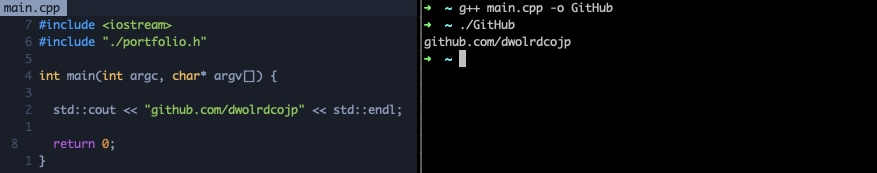
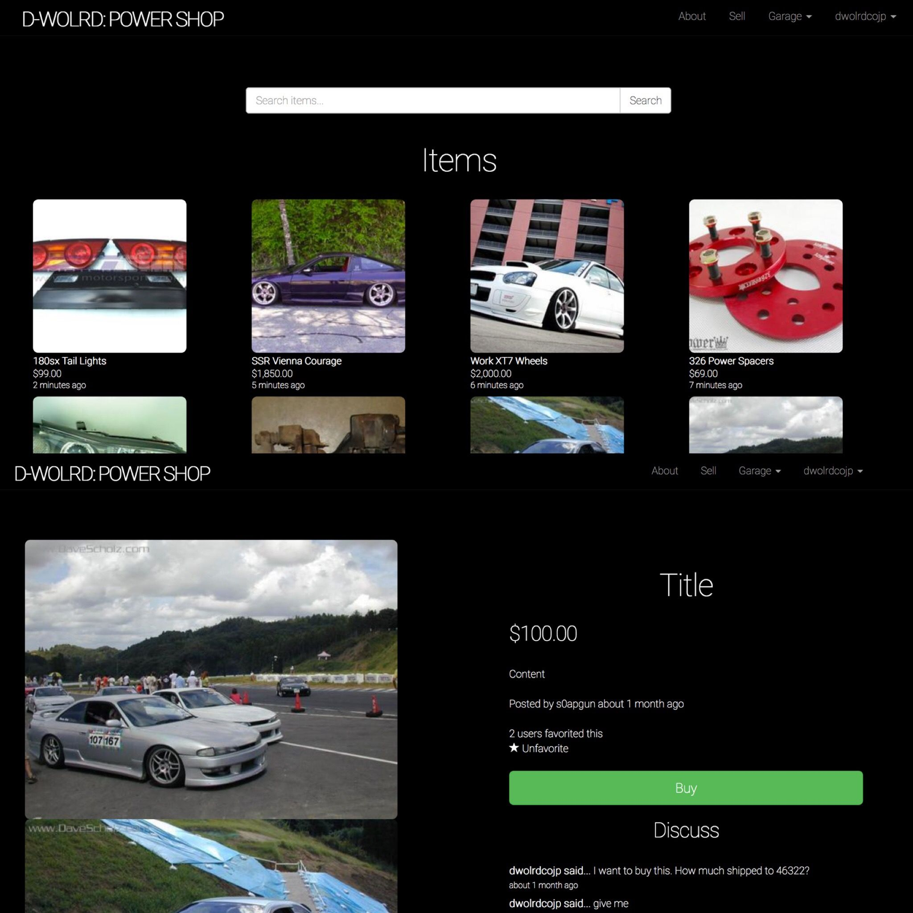

<link rel="stylesheet" href="./mvp.css">
  <header>

    <h1>Max Schrementi</h1>
    <h3>Software Engineer | Grand Rapids, MI</h3>
        <section><aside><small>
              <b>Education</b><br>
Purdue University<br>
B.Sc in Mechanical Engineering
            </small></aside>
        <aside><small>
            <b>Technical Skills</b><br>
Main: C++, Ruby<br>
Secondary: C, JavaScript, Python
          </small></aside></section> 
            

    <a href="https://github.com/dwolrdcojp">
      
    </a>
    <section><aside>
  <a href="https://github.com/dwolrdcojp">GitHub</a> | 
  <a href="resume.pdf">Resume</a>
    </section>
  </header>
<main>
  <section>
    <h2>Portfolio</h2><br><br>
  </section>
  <section>
    <pre><code>
<b>2D Alien Space Shooter Game </b>| 2022 | <a href="https://github.com/dwolrdcojp/Alien_Shooter">https://github.com/dwolrdcojp/Alien_Shooter</a><br>
● Built an Entity Component System (ECS) Game Engine from scratch with C++, leveraging the open source graphics library SFML. Players have to navigate a spaceship, while shooting at enemies to achieve the highest possible score.<br>
● The game engine allows users to rapidly implement & modify game ideas by creating unique entity containers with the combination of data components. It reads data from config files, allowing for changes to any game entities without the need to recompile.<br>
● Created clear, concise and user-friendly documentation, and wrote & maintained clean and legible code with commenting for others to read, understand and collaborate easily.<br>
● Created a custom Vec2 Class with operator overloading to effectively manage entities movement physics.
      <center><iframe width="560" height="315" src="https://www.youtube.com/embed/dN5sAhPSAv0" title="YouTube video player" frameborder="0" allow="accelerometer; autoplay; clipboard-write; encrypted-media; gyroscope; picture-in-picture" allowfullscreen></iframe></center>
    </code>
  </section>
  <section>
    <pre><code>
<b>Automotive Marketplace </b>| 2017 | <a href="https://github.com/dwolrdcojp/dwolrd">https://github.com/dwolrdcojp/dwolrd</a><br>
● Designed and developed an online marketplace for car enthusiasts to buy & sell parts, using Ruby on Rails. Users can create a listing and host pictures with the FileStack API to advertise their offering.<br>
● Implemented commenting and private messaging functionalities for users to interact. Enabled payments through the integrations of PayPal and Stripe APIs, allowing for secure checkouts.<br>
● Deployed the application on Heroku and reached 280 signed-up users over the lifetime of the project.
      <center><a href="https://i.imgur.com/yUXOSCq.jpg">
    
        </a>
      </center>
    </code>
  </section>
  <section>
    <pre><code>
<b>Contact Book </b>| 2022 | <a href="https://github.com/dwolrdcojp/ImGui_Desktop_App">https://github.com/dwolrdcojp/ImGui_Desktop_App</a><br>
● Developed a contact book cross platform desktop application in C++ with the Dear ImGui GUI library with the backend running on SDL2 and rendering with OpenGL3.
● Following the CRUD principle, users can create new contacts, search for contacts, update contacts, and delete them.
● The contact book can load and save contact lists for persistent storage. 
      <center>
<iframe width="560" height="315" src="https://www.youtube.com/embed/b2NgnQG4Bxg" title="YouTube video player" frameborder="0" allow="accelerometer; autoplay; clipboard-write; encrypted-media; gyroscope; picture-in-picture" allowfullscreen></iframe>
      </center>
    </code>
  </section>
</main>
